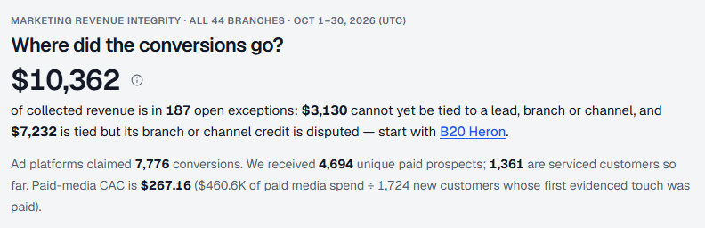
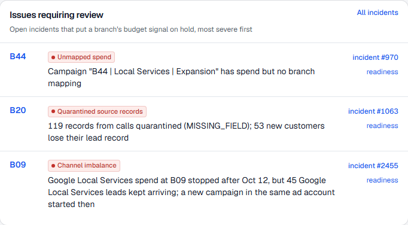
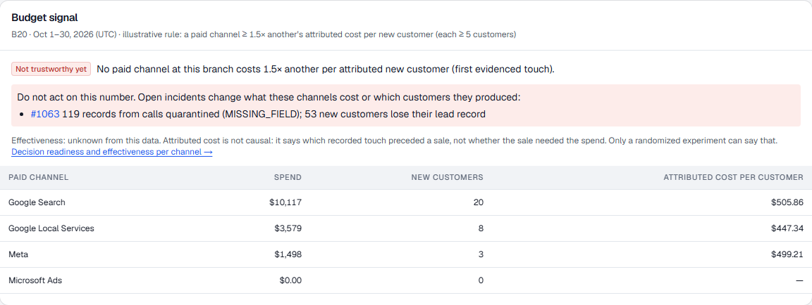
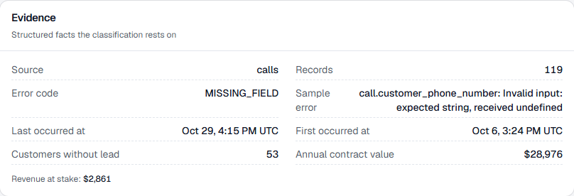
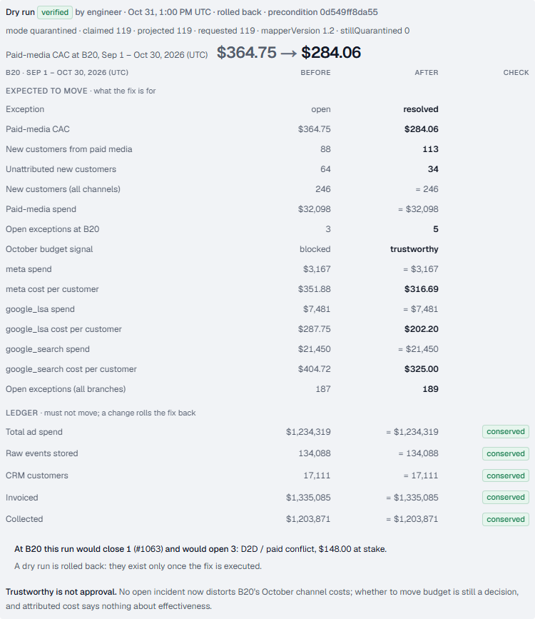
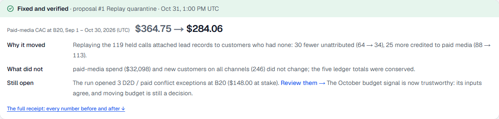
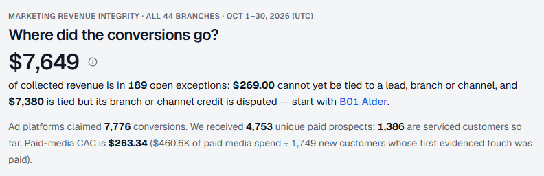

B20's acquisition cost jumped. Cut its paid media, or hold?
October paid-media CAC at B20 read $490.11, against $296.58 in September, and the plausible reading is that paid search got expensive. Before anyone moves budget, the product marks the comparison unsafe and names the incident behind it.

The Overview leads with revenue tied up in open exceptions, and where to start.

Three budget decisions are on hold, each with the incident that holds it.

At B20 the budget signal reads Not trustworthy yet: an open incident changes which customers each channel produced.
2 of 3
The evidence a reviewer can inspect
119 call records were held back because the caller field moved; nothing was guessed. A dry run, rolled back, shows exactly what the fix would change before anyone approves it.

The held records, with contact details hashed before storage.

The dry run: what is expected to move, then five ledger totals that must not. Each reads conserved.
3 of 3
What changed, what did not, what is still open
After a second role approved, the application ran the fix once and verified it.

The resolved incident leads with its result.

The Overview afterwards: B20 is no longer where to start.
Decision
Hold, then fix the feed: the jump was measurement. After the replay, B20's October CAC is $271.31, below September's $296.58, with the same spend and the same 109 customers.
Changed
B20 paid-media CAC, Sep 1 – Oct 30: $364.75 → $284.06, because 25 more new customers were credited to paid media (88 → 113).
Unchanged
Paid-media spend ($32,098), new customers on all channels (246), and the five ledger totals.
Still open
The replay opened 3 door-to-door / paid conflicts at B20 ($148 at stake), with a link to review them.
Not claimed
No budget move was approved: "trustworthy" means the inputs agree. Attributed cost says nothing about effectiveness.